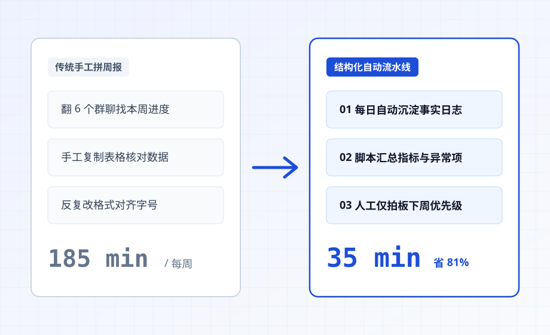
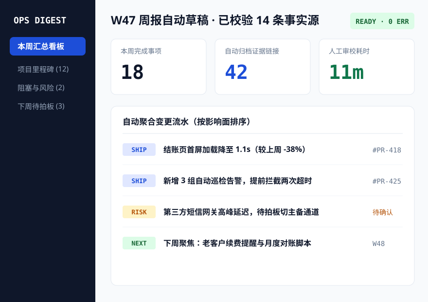

WORKFLOW BENCHMARK
01 / 05
实测 3 种周报流：
每周省下 2.5 小时
连续记录 8 周团队真实耗时，把翻群、对数、改排版彻底交给脚本与日志。

8-WEEK MEASUREMENT02 / 05
耗时从 185 分钟压到 35 分钟
-81%
每周净省 2.5 小时机械整理时间
核心差距不在“写得更快”，而在平时就按结构落盘，周五不再靠记忆翻聊天记录。
BEFORE / AFTER03 / 05
为什么以前越写周报越烦？
旧做法
周五临时回忆
- 素材散在 6 个渠道聊天、工单、文档到处翻，漏掉关键变更
- 数字口径靠手算同一项指标每周算法不一致，难以横向对照
- 80% 精力花在排版挑字号、调颜色，真正思考下周策略只剩 10 分钟
新做法
日常沉淀 + 一键汇流
- 事实随手进同一日志完成一项记一条带链接的短事实，零事后补录
- 脚本自动算指标与风险异常波动标黄上浮，避免报喜不报忧
- 人只负责判断与拍板35 分钟全花在删冗余、定下周优先级
周报不是“工作证明”，而是让团队周一早上 5 分钟对齐方向的操作面板。
LIVE ARTIFACT04 / 05
每周五自动生成的可审校看板
已核验的 14 条事实源自动按 SHIP / RISK / NEXT 分栏，人工只需勾选 3 项待拍板决策。

ACTION PLAN05 / 05
下周起只做这 3 步
告别周五加班
先建一张共享事实日志，把机械汇总交给脚本，把宝贵的判断力留给自己。
01 日常记事实
02 周五跑脚本
03 人工只拍板